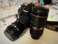

zhzqq0072017-07-01 15:464.75 分
操作性 5.00功能性 4.50美观性 4.50趣味性 4.50耐用性 4.50性价比 5.00解像力 5.00色彩还原 5.00
摄八戒2016-03-28 21:453.88 分
操作性 4.50功能性 4.00美观性 4.00趣味性 4.00耐用性 2.50性价比 4.50解像力 4.00色彩还原 3.50
insol2014-06-01 11:234.75 分
操作性 5.00功能性 5.00美观性 4.50趣味性 4.50耐用性 5.00性价比 5.00解像力 5.00色彩还原 4.00
promise3232014-06-01 01:054.75 分
操作性 4.50功能性 4.50美观性 4.50趣味性 5.00耐用性 4.50性价比 5.00解像力 5.00色彩还原 5.00
promise3232014-02-16 14:34
Roy宋2013-12-14 17:304.19 分
操作性 4.00功能性 4.00美观性 3.50趣味性 4.00耐用性 4.50性价比 4.50解像力 4.50色彩还原 4.50
user1004002013-11-03 18:52
xhr10642013-10-12 19:364.75 分
操作性 4.50功能性 4.50美观性 5.00趣味性 4.50耐用性 5.00性价比 4.50解像力 5.00色彩还原 5.00
xhr10642013-10-12 19:34
jiahongyang2013-09-15 18:564.88 分
操作性 5.00功能性 5.00美观性 5.00趣味性 4.50耐用性 4.50性价比 5.00解像力 5.00色彩还原 5.00

影迷之友2013-07-20 06:364.88 分
操作性 5.00功能性 5.00美观性 5.00趣味性 4.50耐用性 4.50性价比 5.00解像力 5.00色彩还原 5.00
fsonety2013-07-19 10:524.31 分
操作性 3.00功能性 4.50美观性 4.50趣味性 4.00耐用性 3.50性价比 5.00解像力 5.00色彩还原 5.00
Pantrol2013-07-15 00:064.63 分
操作性 5.00功能性 5.00美观性 4.50趣味性 4.50耐用性 4.00性价比 5.00解像力 4.50色彩还原 4.50
runwell5302013-06-25 06:244.56 分
操作性 5.00功能性 5.00美观性 5.00趣味性 3.50耐用性 4.00性价比 5.00解像力 4.50色彩还原 4.50
jackhmily2013-06-24 16:454.88 分
操作性 5.00功能性 5.00美观性 5.00趣味性 4.50耐用性 4.50性价比 5.00解像力 5.00色彩还原 5.00
ZFC88482013-06-21 10:445 分
操作性 5.00功能性 5.00美观性 5.00趣味性 5.00耐用性 5.00性价比 5.00解像力 5.00色彩还原 5.00
唐宋元明清2013-05-19 14:053.75 分
操作性 4.00功能性 4.00美观性 3.00趣味性 4.50耐用性 4.00性价比 4.50解像力 4.00色彩还原 2.00
trcol2013-05-13 06:483.94 分
操作性 4.00功能性 4.50美观性 4.00趣味性 4.00耐用性 4.50性价比 4.00解像力 3.50色彩还原 3.00
fly99022013-04-15 11:374.63 分
操作性 4.50功能性 4.50美观性 5.00趣味性 4.50耐用性 4.50性价比 4.50解像力 5.00色彩还原 4.50
高产奶牛2013-04-07 18:504.94 分
操作性 5.00功能性 5.00美观性 5.00趣味性 5.00耐用性 4.50性价比 5.00解像力 5.00色彩还原 5.00
zhang01022013-02-18 22:094.63 分
操作性 4.50功能性 4.50美观性 4.50趣味性 5.00耐用性 4.50性价比 5.00解像力 4.50色彩还原 4.50